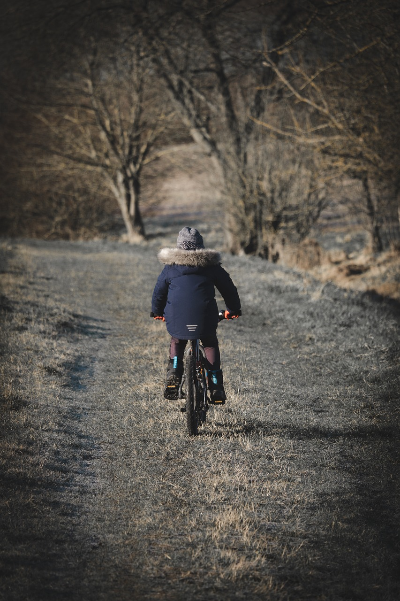
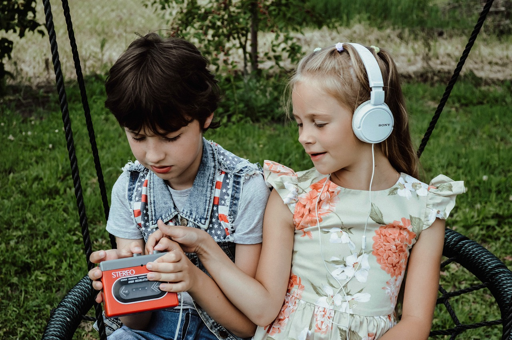
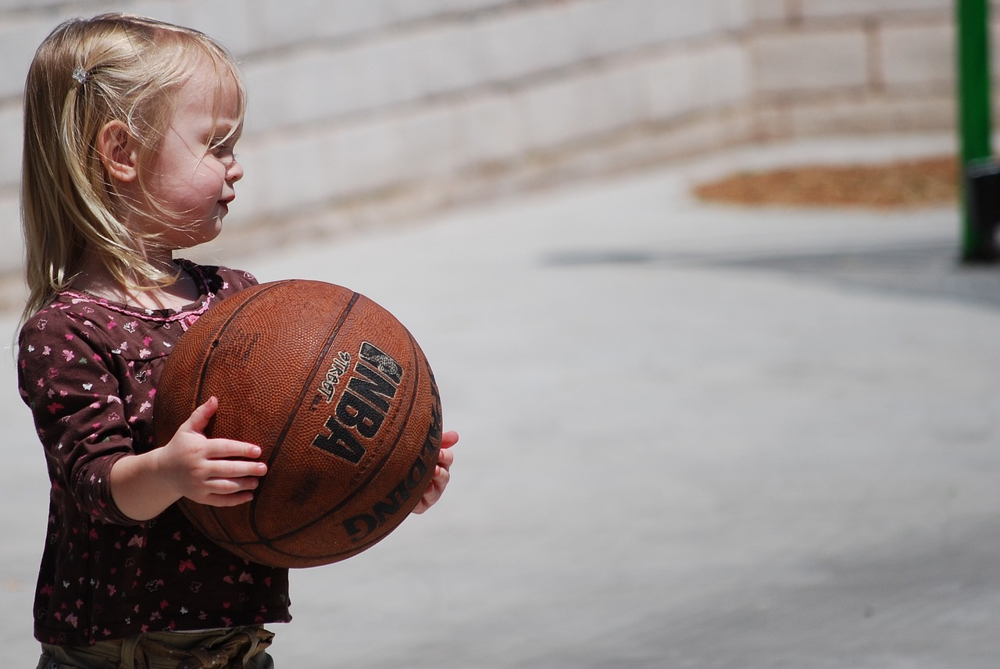

Resimlerle Etkinlik Keşfet
- Hepsi
- Doğada Keşif Etkinlikleri
- Sanatsal ve Yaratıcı Aktiviteler
- Fiziksel Aktiviteler ve Spor
- Zihinsel Gelişimi Destekleyen Etkinlikler

Kamp yapma ve doğada gece geçirme, çocuklar doğal ortamda kamp kurarak, çadırda uyuyarak veya açık havada ateş başında vakit geçirerek doğayı daha yakından deneyimlerler. Bu deneyim, çocukların doğal yaşamı gözlemlemelerine, yıldızları izlemelerine ve çevrelerindeki sesleri duymalarına olanak tanır. Ayrıca, kamp yaparken çocuklar doğal yaşam hakkında bilgi edinir ve çevreyi koruma bilincini geliştirirler.
Kamp yapma ve doğada gece geçirme
Yaratıcı resim yapmak, çocuklar için eğlenceli ve öğretici bir etkinliktir. Bu aktivite sırasında çocuklar hayal güçlerini kullanarak farklı renkler, şekiller ve desenlerle resimler yaparlar. Boya, kalem, pastel boya veya renkli kalemler gibi çeşitli malzemeler kullanarak kendi dünyalarını yaratırlar.
Yaratıcı Resim Yapmak
{kind=link}

Bisiklet sürmek, çocuklar için hem eğlenceli hem de sağlıklı bir aktivitedir. Bisiklet sürmek, dengeli bir yaşam tarzı için önemli bir fiziksel aktivitedir ve aynı zamanda çocukların motor becerilerini geliştirmelerine yardımcı olur. Bisiklet sürmeyi öğrenmek için çocuklarınızla birlikte güvenli bir alanda başlayabilirsiniz. İlk olarak, bisiklet üzerinde dengesini sağlamalarına yardımcı olun. Daha sonra, pedallamayı ve frenlemeyi öğretin. Başlangıçta destekleyici tekerlekler kullanmak, çocukların güvenlerini kazanmalarına ve denge yeteneklerini geliştirmelerine yardımcı olabilir.
Bisiklet sürme
{kind=link}

Yaratıcı yazma ve öyküleme, çocukların hayal gücünü serbest bırakmalarını sağlayan ve onların duygusal ifade becerilerini geliştiren bir etkinliktir. Çocuklar, kendi hikayelerini yaratırken farklı karakterler, olaylar ve dünyalar hayal ederler. Bu süreçte, dil becerilerini geliştirir, kelime dağarcığını zenginleştirir ve kendilerini daha iyi ifade etme yeteneklerini artırırlar.
Yaratıcı yazma ve öyküleme

Bahçe etkinlikleri ve bitki dikimi, çocukların doğayı keşfetmelerini, öğrenmelerini ve sorumluluk duygularını geliştirmelerini sağlayan değerli bir deneyim sunar. Bu etkinlikler, çocukların fiziksel, duygusal ve zihinsel gelişimine katkıda bulunurken aynı zamanda keyifli bir zaman geçirmelerini sağlar.
Bahçe etkinlikleri ve bitki dikimi

Müzik ve dans etkinlikleri çocuklar için hem eğlenceli hem de öğretici bir deneyim sunar. Çocuklarınızla birlikte müzik dinlemek, ritim tutmak veya dans etmek, onların yaratıcılığını, duygusal ifadelerini ve sosyal becerilerini geliştirmelerine yardımcı olur. Bu etkinlikler, çocukların stresini azaltırken aynı zamanda bedensel koordinasyonlarını ve ritim duygularını da artırır. Birlikte müzik yapmak ve dans etmek, çocuklarınızla keyifli ve anlamlı vakit geçirmenin harika bir yoludur.
Müzik ve dans etkinlikleri
{kind=link}

Yüzme ve su oyunları çocuklar için hem eğlenceli hem de fiziksel gelişimlerine katkı sağlayan harika etkinliklerdir. Çocuklarınızı yüzme havuzuna veya denize götürerek suyla etkileşimde bulunmalarını sağlayabilirsiniz. Yüzme, çocukların bedensel koordinasyonunu ve kas gücünü artırırken aynı zamanda su güvenliği konusunda da bilinçlenmelerini sağlar. Su oyunları ise çocukların sosyal becerilerini geliştirirken eğlenmelerine olanak tanır. Top, halka veya su altı oyunları gibi çeşitli su aktiviteleriyle çocuklarınızın suya olan ilgisini artırabilir ve onları keyifli bir öğrenme sürecine dahil edebilirsiniz. Unutmayın, suyun içinde vakit geçirmek çocuklarınız için öğrenirken eğlenmelerini sağlayan bir macera olabilir!
Yüzme ve su oyunları

Zeka oyunları, çocukların zihinsel yeteneklerini geliştiren ve eğlenceli bir öğrenme deneyimi sunan harika etkinliklerdir. Bulmacalar, labirentler, satranç, kelime oyunları ve mantık bulmacaları gibi çeşitli zeka oyunları, çocukların problem çözme, odaklanma ve strateji geliştirme becerilerini artırır. Bu tür oyunlar aynı zamanda çocukların yaratıcılıklarını ve eleştirel düşünme yeteneklerini de destekler. Evde veya okulda, çocuklarınızla birlikte zaman geçirirken zeka oyunları oynamak, hem eğlenceli vakit geçirmenizi sağlar hem de onların zihinsel gelişimine katkıda bulunur.
Zeka Oyunları

Yıldızları izlemek ve doğal yaşamı gözlemlemek, çocuklar için büyüleyici ve öğretici bir deneyimdir. Geceleyin açık bir alana giderek yıldızları izlemek, çocuklara evrenin derinliklerine bir yolculuk yapma fırsatı sunar. Uzaydaki yıldızları, gezegenleri ve hatta uyduları gözlemlemek, çocukların merakını uyandırır ve astronomiye ilgi duymalarını sağlar.
Yıldızları izleme ve doğal yaşamı gözlemleme

Drama ve tiyatro oyunları, çocukların yaratıcılığını ve duygusal gelişimini destekleyen keyifli etkinliklerdir. Çocuklar, farklı rolleri deneyerek duygusal ifade becerilerini geliştirir ve hayal güçlerini kullanma fırsatı bulurlar. Aynı zamanda, sahne önünde kendilerini ifade etmenin ve performans sergilemenin heyecanını yaşarlar.
Drama ve tiyatro oyunları

Basketbol gibi takım sporları, çocukların fiziksel sağlıklarını desteklerken birlikte çalışma, liderlik ve takım ruhu gibi önemli beceriler kazanmalarını sağlar. Bu sporlar, çocukların koordinasyonunu geliştirir ve dayanıklılık seviyelerini artırır. Aynı zamanda, spor yaparken birlikte başarıya ulaşma ve yenilgiyi kabul etme gibi önemli yaşam derslerini de öğrenirler.
Basketbol gibi takım sporları
{kind=link}

Kitap okuma ve hikaye anlatma, çocukların hayal gücünü ve dil becerilerini geliştirmenin yanı sıra onların öğrenme sürecine de katkı sağlar. Bu etkinlikler, çocukların kelime dağarcığını zenginleştirir, dil becerilerini güçlendirir ve düşünsel gelişimlerine katkıda bulunur.Kitap okuma, çocukların düşsel dünyalarına girmelerine ve farklı yaşam deneyimlerini keşfetmelerine olanak tanır. Çocuklar, kitaplardaki karakterlerle empati kurar, duygularını ifade etme becerilerini geliştirir ve sorunları çözme yeteneklerini güçlendirir.
Kitap okuma ve hikaye anlatma